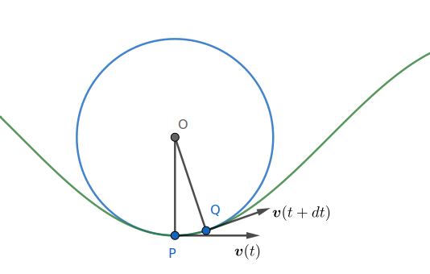
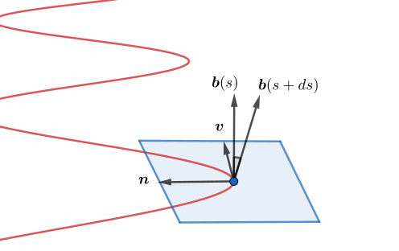

正则曲线在 `(0, T)` 上的弧长为 `s = int_0^T "d"s = int_0^T |"d"bm r| = int_0^T v dt`. 由于 `v gt 0`, 上式确定了时间 `T` 关于 `s` 的隐函数. 故可令曲线以 `s` 为参数, 有 `("d"bm r)/("d"s)` `= dt/("d"s) ("d"bm r)/dt` `= (bm v)/v`. 即曲线在弧长参数下, 速率恒为 1. 这一性质对今后的讨论很有帮助.
对于平面曲线上的任意一点 `P`, 定义 `P` 点处的曲率 (curvature)为
`kappa := dd varphi s`.
其中 `"d"s` 是运动粒子经过的弧长, `"d"varphi` 是这期间切向量转动的角度.
规定逆时针为正向, 因此曲率为正意味曲线沿逆时针绕行.
直观上, 在 `P` 点, 可以作一个圆贴合曲线的形状, 称为曲率圆,
其弧长近似 `"d"s`, 圆心角近似 `"d"varphi`,
因此曲率圆的半径 `r` 刻画了 `P` 点处曲线的弯曲程度, 即曲率
`kappa = 1//r`.
曲率圆心可以这样作出: 在 `P` 附近取一点 `Q`, 然后取 `P, Q` 处法线的交点.
当 `Q` 趋近 `P` 时, 圆心趋于一个确定的点 `O`.

曲率的计算 设 `bm r(s)` 为平面曲线, `s` 是弧长参数. 在曲线上一点处, `bm v` 是单位切向量. 另取一个单位向量 `bm n` 使得 `bm v _|_ bm n` 且 `bm v, bm n` 成右手系. 称 `{bm r"; " bm v, bm n}` 为点 `P` 处的 Frenet 标架. 此时曲率的公式为: `bm v' = bm r'' = kappa bm n`. 即曲率的大小等于向量 `bm v'` 的长度, 曲率的符号取决于 `bm v'` 和 `bm n` 是否同向. 我们称 `bm v'` 为这一点的曲率向量, 又称为向心力.
弧长参数下切向量 `bm v = bm r'` 恰为单位向量. 由 `|"d"bm v| ~ |"d"varphi|` 两边同除以 `"d"s` 即得到 `|bm v'| = |kappa|`. 由 `bm v` 的长度不变知道 `bm v' _|_ bm v`. 由上图看出, `bm v'` 是 `P` 点处的法向量, 方向指向曲率圆心 `O`.
Frenet 标架是局部的, 曲线上每一点都有自己的标架. 这与全局标架 (如平面直角坐标系) 不同.
取平面直角坐标系 `bm r = (x, y)`, 则
`"d"bm r = (dx, dy)`,
`quad "d"s = |"d"bm r| = sqrt(dx^2+dy^2)`,
`quad bm n = (-dy/("d"s), dx/("d"s))`,
`quad |kappa| = |("d"^2 bm r)/("d"s^2)|`.
`bm n` 的推导: `bm n = [cos pi//2, -sin pi//2; sin pi//2, cos pi//2] bm v` `= [0, -1; 1, 0] ("d"bm r)/("d"s)`.
三维空间曲线一般不能放进一个平面内, 然而在每个点的局部,
仍可以近似位于一个平面内, 它是在这一点处与曲线最贴近的平面,
称为这个点的密切平面.
在密切平面的内部, 我们依然可以按二维的思路定义它的曲率 `kappa`.
注意与二维不同, 三维曲线的曲率总是非负的.
与此同时, 粒子在曲线上运动时, 密切平面也随之旋转,
它旋转的速率定义为曲线的挠率 (torsion). 挠率可以为负.
等价地说, 挠率是曲线在垂直于前进方向 `bm v` 的平面上 (称为法平面) 扭动的速率.

以上概念的具体定义如下:
曲率和挠率的计算 在 Frenet 标架下, `bm v' = kappa bm n`, `quad bm b' = -tau bm n`.
第一个等式由主法向量的定义即可得知. 下证第二式. 在 `|"d"bm b| ~ |"d"theta|` 两边同除以 `"d"s` 得到 `|bm b'| = |tau|`. 由上图知道 `bm b` 变化的方向与 `bm n` 相反, 从而 `bm b' = -tau bm n`.
`E^3` 的正则曲线 `bm r(t)` 的曲率和挠率分别为 `kappa(t) = |bm v ^^ dot bm v|/v^3`, `quad` `tau(t) = {:(bm v, dot bm v, ddot bm v):}/|bm v ^^ dot bm v|^2`. 其中 `bm v = dot bm r`.
`E^2` 的正则曲线 `bm r(t) = (x(t), y(t))` 的曲率 `kappa(t) = (dot x ddot y - ddot x dot y)/ ({:dot x:}^2 + {:dot y:}^2)^(3//2)`. 特别当 `t` 为弧长参数时, `kappa = (ddot y)/(dot x) = -(ddot x)/(dot y)`.
记 `bm v = ("d"bm r)/("d"s)`, 则 `kappa bm n` `= ("d"bm v)/("d"s)` `= ("d"bm v)/dt dt/("d"s)` `= 1/v "d"/dt((dot bm r)/v)` `= 1/v^3 (ddot bm r v - dot v dot bm r)`. 两边与 `bm n` 作内积, `kappa = 1/v^2(:ddot bm r, bm n:)` 用 `x(t), y(t)` 写出 `bm n = ((-dot y, dot x))/sqrt(dot x^2+dot y^2)`, 结合上面两式即得第一个结论. 现在设 `t` 为弧长参数, 则 `dot x^2 + dot y^2 = 1`, 求导得 `dot x ddot x + dot y ddot y = 0`. 这就是说 `(ddot y)/(dot x) = -(ddot x)/(dot y)`. 于是利用 `dot x ddot x = -dot y ddot y`, `dot x kappa = dot x^2 ddot y - dot x ddot x dot y` `= dot x^2 ddot y + dot y^2 ddot y` `= ddot y`. 这证明了弧长参数的情形.
在极坐标下, 曲线 `r = f(theta)` 的曲率 `kappa(theta) = (r^2 + 2{:r':}^2 - rr'')/(r^2 + {:r':}^2)^(3//2)`. 其中各导数均表示对 `theta` 求导.
圆柱螺旋线 `bm r(t) = (a cos t, a sin t, bt)` (`a gt 0`) 的曲率的挠率分别为 `kappa = a/(a^2+b^2)`, `quad tau = b/(a^2+b^2)`. 有趣的是, 上式的反函数具有相同形式: `a = kappa/(kappa^2+tau^2)`, `quad b = tau/(kappa^2+tau^2)`. 事实上, `f(bm r) = bm r//r^2` 正是关于单位圆的反演变换.
平面曲线的曲率恒等于 0 当且仅当它是直线; 恒等于非零常数当且仅当它是半径为 `1/kappa` 的圆.
设空间曲线 `bm r` 的曲率 `kappa` 和挠率 `tau` 为常数, 则
空间曲线的曲率恒不等于 0 时, 它落在一张平面上当且仅当其挠率恒等于 0.
设曲线 `bm r` 落在以 `bm a` 为单位法向量的平面上,
则 `bm r` 的切向量与 `bm a` 垂直,
即 `(:bm t, bm a:) = 0`.
求导得 `kappa (:bm n, bm a:) = 0`.
由假设 `kappa(s) != 0`, 得到 `(:bm n, bm a:) = 0`.
再求导得 `(:-kappa bm t + tau bm b, bm a:) = 0`,
因此 `tau (:bm b, bm a:) = 0`.
由 `bm a` 与 `bm t, bm n` 垂直知 `bm a` 与 `bm b` 平行,
从而 `(:bm b, bm a:) = +-1`, `tau -= 0`.
反之设 `tau -= 0`, 由 `("d"bm b)/("d"s) = -tau bm n` 知 `bm b`
是常向量. 因为 `bm t` 与 `bm b` 垂直, `bm t` 只能落在同一平面内,
即曲线 `bm r` 落在同一平面内.
常用 "不屈 (曲) 不挠" 形容一个人很顽强.
曲线的弧长, 曲率和挠率在刚体运动 (同向合同变换) 下不变.
平面和空间的 Frenet 方程给出了各自 Frenet 标架的运动方程, 它们是一阶线性常微分方程组. 下面的两个定理说明, 我们可以通过求解此方程组来重建曲线, 且此曲线是唯一的. 换言之, 在相差一个刚体运动下, 曲线由曲率和挠率唯一决定.
设 `E^3` 中有两条弧长参数曲线 `bm r_1(s), bm r_2(s)` 定义在同一参数区间 `(a, b)` 上, 且它们的曲率与挠率在 `(a, b)` 上恒等: `kappa_1(s) = kappa_2(s) gt 0`, `tau_1(s) = tau_2(s)`, `AA s in (a, b)`. 则存在 `E^3` 的一个刚体运动使两条曲线相等.
设 `kappa(s), tau(s) in C^1(a, b)`, `kappa(s) gt 0`. 则存在 `E^3` 的弧长参数曲线, 它以 `s` 为弧长参数, 以 `kappa` 为曲率, `tau` 的挠率.